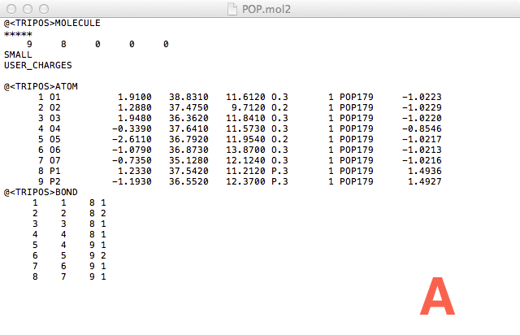
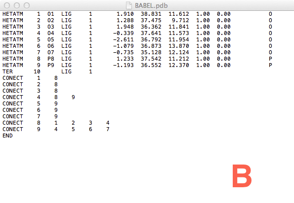
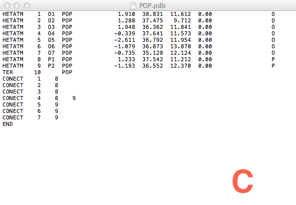
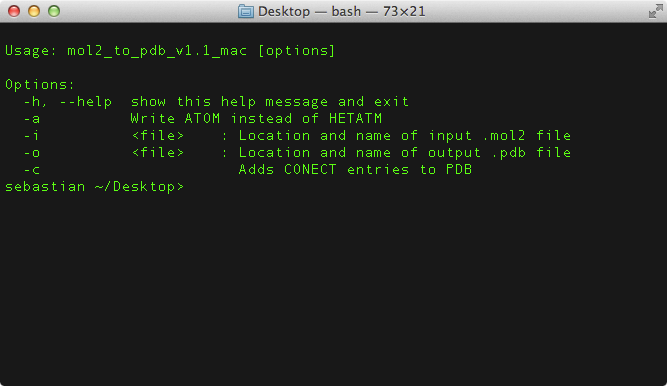
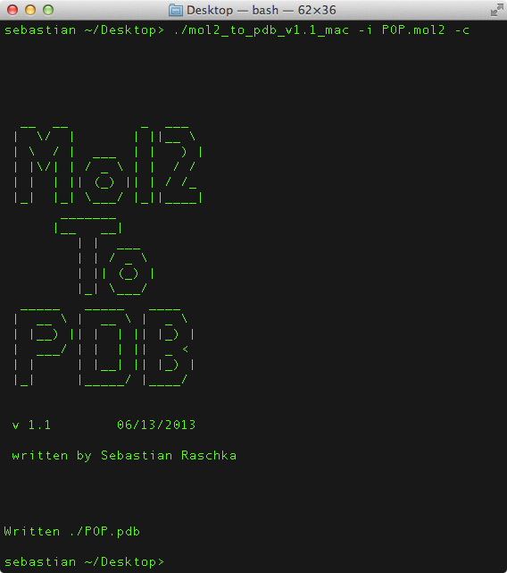

The Mol2 To PDB converter is a command line program that converts protein structure files from the partial-charge containing Mol2 file format into regular PDB files. The program has an option to write out information about the covalent bonds, i.e., CONECT entries, to the PDB file.
The software I was using required the protein structure files to be in the common PDB format. However, I got this collection of hundreds of Mol2 files. Fortunately, we have a license for the openeye software package in our lab, so I used openeye's babel, which was supposed to do exactly what I wanted: Convert my Mol2 files into PDB files.
So why did I end up writing this tool? Sure, it might be useful for people who don't have a rather expensive openeye license. But another important reason was that openeye's babel converter made some errors writing the CONECT entries. Also, it didn't assign the ligand's 3-letter code, which can be a problem if you are working with multiple structures.
The screenshots below show the Mol2 input file (A) and the resulting PDB files after running openeye Babel (B) and my Mol2 to PDB converter (C).

Figure A: Mol2 file of Pyrophosphate (POP).
Figure B: PDB file from openeye Babel conversion.
Figure C: PDB file from my Mol2 To PDB conversion tool.The usage of the Mol2 To PDB Converter is intuitive and simple.
Simply Run
Mol2 To PDB Converter with the -h flag to see the options that are available:

Where an example execution could look like this:

Download the Mol2 to PDB converter for your operating system:
| Mac OS X | v 1.1 |
| Linux | v 1.1 |
| Windows | v 1.1 |